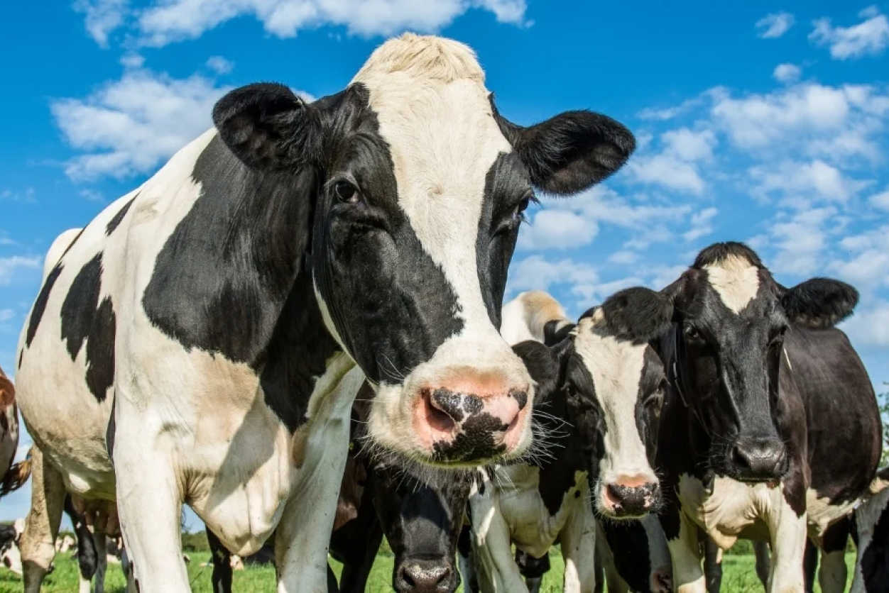
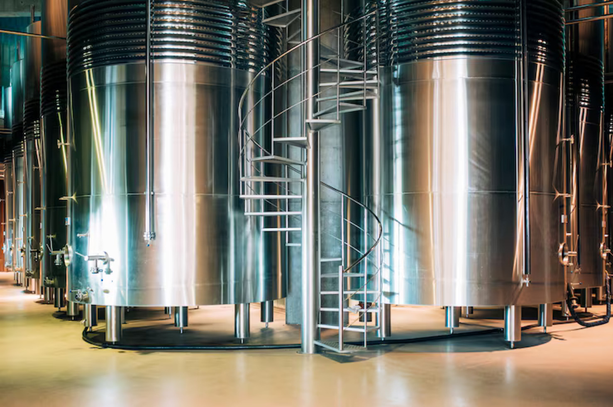

Esta calculadora permite que o produtor de leite analise o dinheiro que ele deixa de ganhar pela
falta de controle de temperatura e umidade em seus tanques de armazenamento.
Quantidade de tanques de armazenamento de leite
Capacidade média dos tanques de armazenamento de leite
Valor do litro de leite (R$)
Perda sem sensor (%)
Capacidade Total:
0 Litro(s)Possível perda de receita diária:
R$0,00Possível perda de receita mensal:
R$0,00Possível perda de receita anual:
R$0,00Perda de receita evitada utilizando a MooTech:
R$0,00
O sistema de monitoramento de temperatura e umidade MooTech nasceu em 2026 com o objetivo de revolucionar o mercado de produção rural de leite.
Utilizando a solução, o cliente tem acesso a dashboards de fácil entendimento, bem como insights sobre sua produção de leite, garantindo qualidade e segurança.

Controle de temperatura e umidade eficiente e barato!
O sistema de monitoramento da MooTech realiza o monitoramento em tempo real da temperatura e da umidade nos tanques de armazenamento de leite, garantindo a melhor qualidade do leite pós-ordenha.
Sensor
Sensor responsável pela captura de dados em tempo real, instalado nos tanques
Sistema
Sistema online que recebe os dados do sensor e oferece insights importantes
Alerta
Ao detectar anormalidades, é enviado um alerta ao produtor